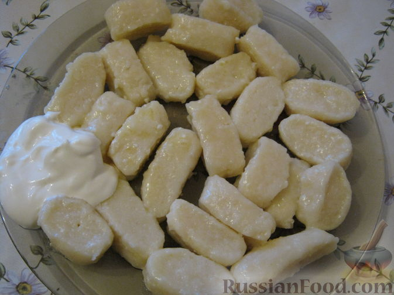
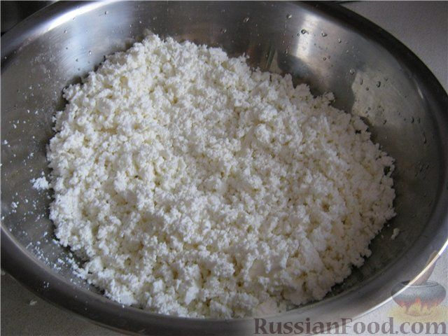
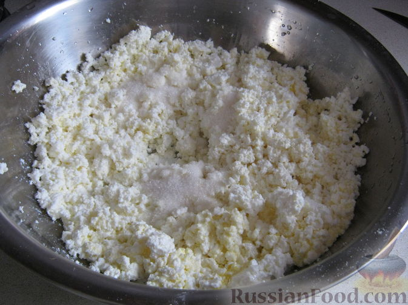
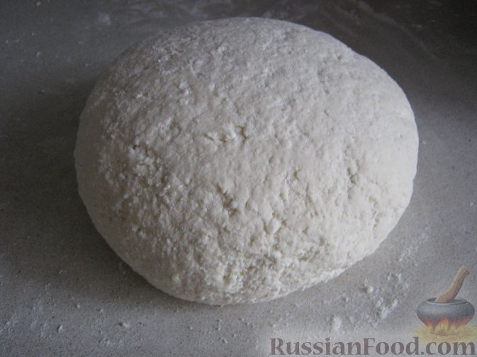
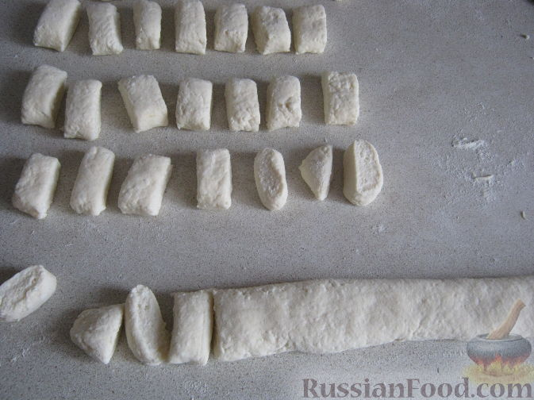
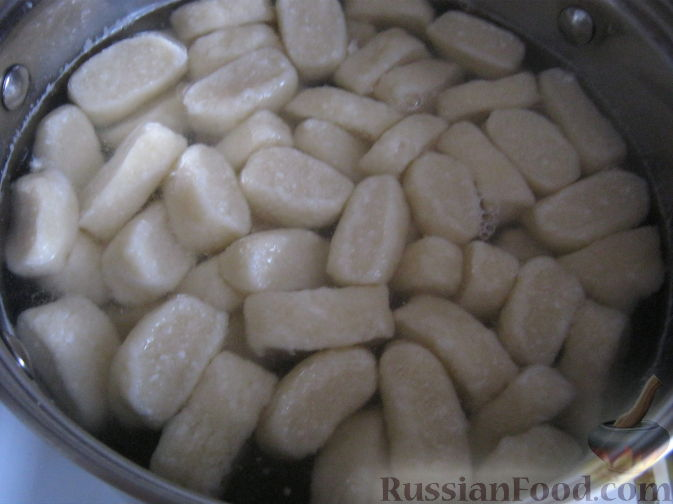
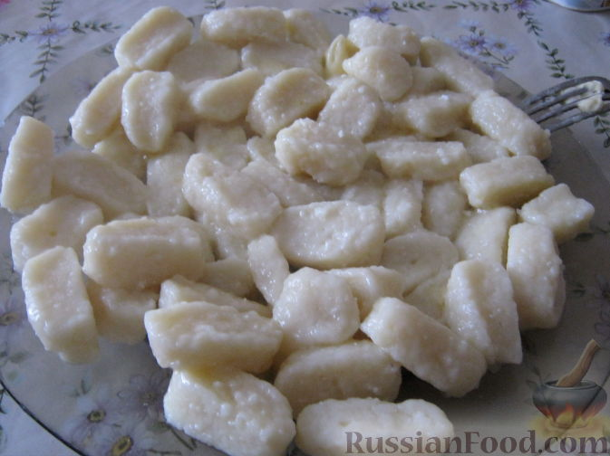

Lazy Vareniki (Farmer's Cheese Dumplings)

A quick, healthy and tasty breakfast of tender dumplings made from farmer's cheese (tvorog). Kids love them.
Ingredients
- 500 g farmer's cheese (tvorog)
- 1–2 eggs
- 2–3 tbsp sugar (optional)
- 1–1.5 cups flour (sifted)
- 3 tbsp butter, melted (plus more for serving)
- 1 pinch salt
- Sour cream, to serve
Instructions
- Press the farmer's cheese through a meat grinder or rub it through a sieve.

- Add the eggs, sugar (optional), melted butter and salt, and mix well.

- Add the sifted flour and knead into a soft dough. Meanwhile, put a pot of salted water on to boil.

- Turn the dough out onto a floured surface and cut it into 2 equal parts.

- Roll each part into a thin log, flatten it slightly, and cut into small pieces.

- Drop the dumplings into the boiling salted water and cook until they float to the surface.
- Lift them out with a slotted spoon, drizzle with melted butter, and serve with sour cream.
